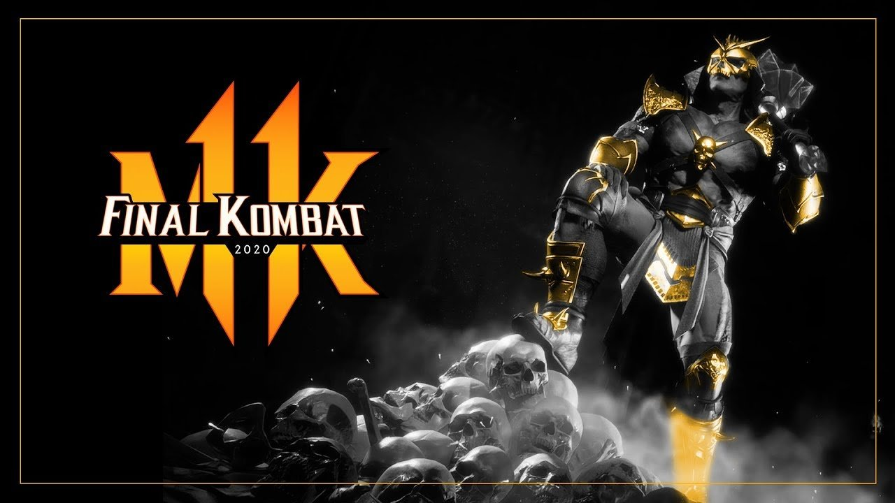
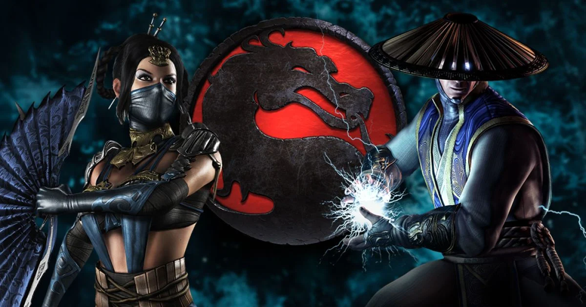

Explora los eventos más representativos que han definido la historia competitiva de Mortal Kombat a nivel mundial.
Evolution Championship Series (EVO)
EVO es el torneo más emblemático del mundo de los juegos de pelea. Desde su debut en Las Vegas, ha sido el escenario donde nacen las leyendas. Mortal Kombat ha tenido una presencia destacada desde MK9, y especialmente con MKX y MK11. Jugadores como SonicFox, Rewind y Tekken Master han protagonizado combates épicos que definieron metajuegos enteros. La comunidad se reúne cada año para presenciar momentos históricos y emocionantes regresos.
Final Kombat

Final Kombat es el evento culminante del circuito oficial de NetherRealm Studios. Reúne a los mejores jugadores del mundo tras un año de competencia en la Pro Kompetition. El evento es conocido por su producción cinematográfica y por ser el lugar donde se revelan tráilers importantes (como Spawn en MK11). Se celebra en Chicago y cada edición ha dejado momentos imborrables.
Es el circuito competitivo oficial de Mortal Kombat 11 y ahora MK1. Incluye clasificatorios regionales, torneos online y majors presenciales. Con premios sustanciosos y un enfoque en todas las regiones del mundo (NA, LATAM, EU, Asia), esta liga permite que nuevos talentos se enfrenten a veteranos, lo que la hace vital para el desarrollo competitivo global.
Combo Breaker es conocido por su atmósfera de comunidad y por ser uno de los eventos más queridos por los fans. Se celebra en Illinois, EE. UU., y ha sido escenario de momentos inolvidables, como la aparición sorpresa de personajes y enfrentamientos cargados de emoción. Su filosofía es inclusiva, enfocada en brindar una experiencia de alto nivel a todos los jugadores.
CEO (Community Effort Orlando)
CEO destaca por su presentación única al estilo lucha libre, con jugadores entrando al ring con música temática. La experiencia es tanto competitiva como entretenida, y Mortal Kombat siempre tiene un lugar protagónico en sus brackets. Combina calidad técnica con espectáculo puro, atrayendo a miles de espectadores presenciales y online.
WePlay Ultimate Fighting League (WUFL)

Con sede en Ucrania, WUFL fue uno de los torneos con mejor producción visual durante la pandemia. Su formato tipo liga y la participación de figuras como A F0xy Grampa, Grr y SonicFox lo convirtieron en un referente de lo que un torneo online puede alcanzar. WUFL demostró que la innovación es clave para mantener viva la escena competitiva.